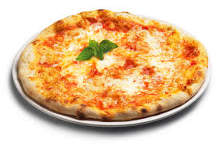

Pizza Margarita

Descripción
La Pizza Margarita es un símbolo de la gastronomía italiana, famosa por su simplicidad y sabores auténticos. Originaria de Nápoles, esta pizza se compone de una base crujiente y ligera cubierta con una delicada salsa de tomate, mozzarella fresca y hojas de albahaca. Estos ingredientes no solo crean una combinación deliciosa, sino que también representan los colores de la bandera italiana: el rojo del tomate, el blanco del queso y el verde de la albahaca. Su preparación artesanal y su sabor equilibrado la han convertido en una de las recetas más queridas y replicadas en todo el mundo
Lo que hace única a la Pizza Margarita es la calidad de sus ingredientes y el proceso de cocción a alta temperatura, que le otorga una textura crujiente por fuera y suave por dentro. Cada bocado es una experiencia que combina la frescura del tomate, la cremosidad de la mozzarella y el toque aromático de la albahaca. Perfecta para compartir en cualquier ocasión, esta pizza es una celebración de la tradición italiana que destaca por su sencillez y autenticidad
Ingredientes
Para la masa de pizza
- 300 g de harina de trigo (preferiblemente de fuerza)
- 200 ml de agua tibia
- 7 g de levadura seca (o 20 g de levadura fresca)
- 1 cucharadita de sal y 1 de azúcar
- 2 cucharadas de aceite de oliva
Para la salsa de tomate
- 300 gr de tomate triturado
- 1 diente de ajo picado
- 1 cucharada de aceite de oliva
- 400 gr de tomate triturado
- 1 cucharadita de orégano seco
- sal y pimienta a gusto
Para el montaje de la pizza
- 200 gr de mozzarella fresca de bola
- hojas frescas de albahaca
- 1 cucharada de aceite de olivara para rociar al final
Pasos
Preparar la masa de pizza
- En un bol grande, mezcla el agua tibia con la levadura y el azúcar. Deja reposar 10 minutos hasta que se active (deberás ver espuma en la superficie)
- Añade la harina, la sal y el aceite de oliva. Mezcla hasta integrar los ingredientes
- Amasa durante 8-10 minutos en una superficie enharinada hasta obtener una masa suave y elástica
- Forma una bola con la masa, colócala en un bol ligeramente engrasado y cúbrela con un paño limpio. Deja reposar en un lugar cálido durante 1-2 horas o hasta que duplique su tamaño
Preparar la salsa de tomate
- En una sartén,calienta una cucharada de aceite de oliva a fuego medio
- Añade el ajo picado y sofríe durante 1 minuto sin dejar que se queme
- Incorpora el tomate triturado, el orégano, la sal, y la pimienta a gusto
- Cocina a fuego lento durante 15-20 minutos, removiendo ocasionalmente, hasta que la salsa espese ligeramente
Montar la pizza
- Precalienta el horno a la temperatura más alta que permita tu horno
- Divide la masa en dos partes iguales, estírala con un rodillo, o con las manos, hasta formar un círculo de unos 25 cm de diámetro
- Coloca la masa estirada sobre una bandeja de horno con papel para hornear
- Extiende una capa fina de salsa de tomate sobre la base de la pizza
- Desmenuza la mozzarella fresca en trozos y repártela sobre la salsa
Hornear y servir
- Hornea la pizza en la parte más baja del horno durante 8-12 minutos, o hasta que los bordes estén dorados y el queso completamente derretido
- Al sacarla del horno, decora con hojas frescas de albahaca y rocía con un chorrito de aceite de oliva
¡Y listo! ¡Disfruta de una Pizza Margarita auténtica con el sabor tradicional italiano!
Home